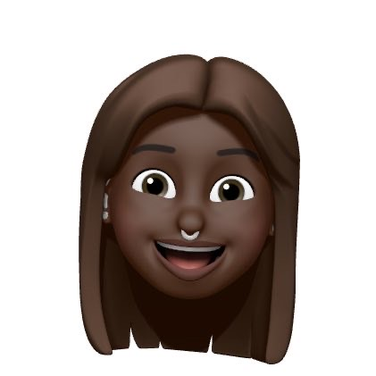

I'm Tito.
A Web Developer.

A Web Developer.
I'm Tito, and I'm passionate about creating things for the web. I started my journey as a developer about a year ago. One day I found myself thinking, 'What next?' and concluded that I wanted more out of life. So I wrote down all of my strengths and interests and that was the start of my journey as a developer.
In the months that followed, I cultivated my passion for coding by taking courses on HTML and CSS and got really hooked. Later, I enrolled into a Tech school named, Tech Studio Academy in between my full-time job and took a Javascript FullStack Web Development Program. During the weekends for months, I dedicated my spare time to learning Computer Fundamentals, Web Development, Web Design and User Experience.
Fast forward to today, I can create useful websites like the one you'll find in this portfolio with the use of JavaScript Library, ReactJS. I'm now looking for a developer position to finally kick start my career in Tech and learn among professionals and peers.


 Bolatito Adeneye. © Copyright 2022